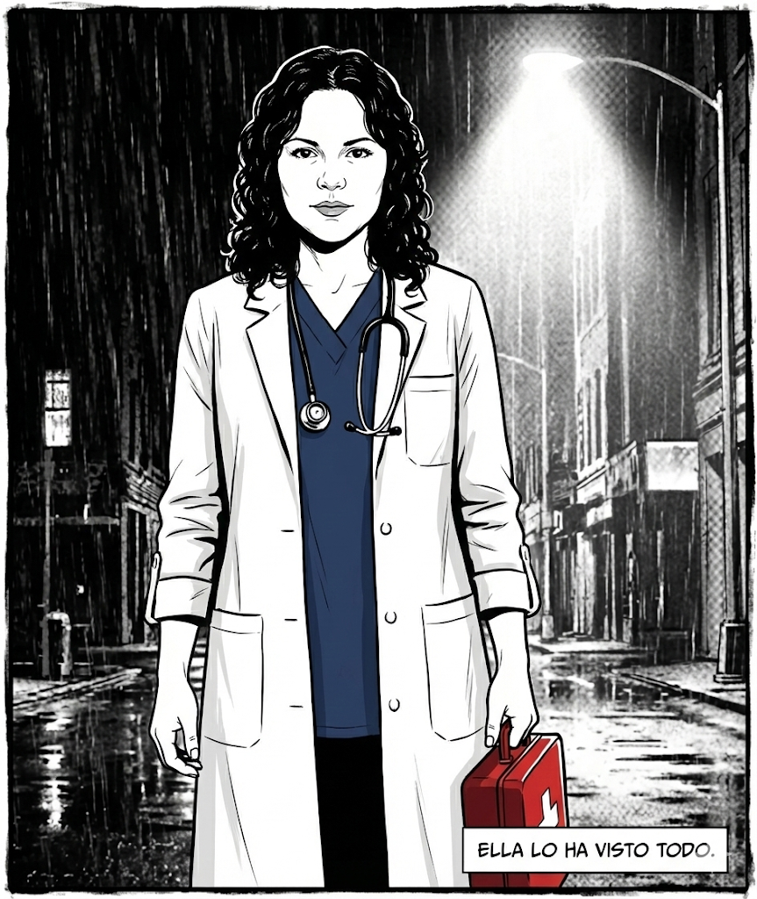

SanidadEdTech- V. López
Soy enfermera de urgencias y emergencias, lo que significa que mi nivel base de estrés es "catástrofe nuclear" y mi tolerancia a la tontería es cero. Cuando no estoy canalizando vías o enseñando a futuros técnicos en emergencias sanitarias a no desmayarse con la sangre, estoy compilando código o discutiendo con un modelo de lenguaje grande (LLM) sobre la ética kantiana aplicada al triaje.
Soy una friki de manual. Creo firmemente que el Imperio Galáctico cayó por una mala gestión de recursos humanos y falta de ciberseguridad en la Estrella de la Muerte. Me apasiona la filosofía porque, al final del día, cuando la tecnología falla y la medicina llega a su límite, solo nos queda preguntarnos el "porqué".
Escribo esta guía porque creo en una sanidad donde la tecnología nos haga más humanos, no menos. La IA es el nuevo beskar: si sabes forjarlo, te protege; si no, te pesa y te hunde.

Web: SanidadEdTech
Formación, experiencia y otros formalismos
Si has llegado hasta aquí buscando el currículum de alguien que nunca se ha manchado el pijama o que vive en una torre de marfil académica, te has equivocado de guía. Soy Vera López, y mi vida profesional es un diagrama de Venn entre la adrenalina de las urgencias y la locura maravillosa de la docencia.
Soy Enfermera de Urgencias y Emergencias y Profesora de Formación Profesional. ¿Qué significa eso? Que sé mantener la calma tanto si un paciente entra en parada como si la plataforma online del curso decide morir cinco minutos antes de la entrega de notas.
He pasado años en la trinchera asistencial: desde correr por los pasillos de Urgencias Hospitalarias y trabajar en unidades de Soporte Vital Avanzado , hasta gestionar la coordinación sanitaria en grandes dispositivos de riesgo y ayuda humanitaria.
En mi faceta docente, imparto clases en Ciclos Formativos , intentando que los futuros técnicos sanitarios no solo aprendan la técnica, sino que entiendan el "porqué" (mi lado filósofo). Tan mal no lo debo hacer cuando acabé nominada a Mejor Docente de España en la categoría de FP (Premios Educa Abanca 2022). No me dieron un sable láser, pero el reconocimiento estuvo bien.
¿Por qué escribo sobre IA? Porque soy una friki irredenta de la EdTech y la Inteligencia Artificial en Salud. Me especializo continuamente —tengo un Máster en IA y Salud y otro en TIC aplicadas a la Educación — porque me gusta acumular conocimientos casi tanto como a un mandaloriano le gusta el beskar.
Escribo esto porque creo en una sanidad donde la tecnología nos haga más humanos, no menos. Y porque alguien tenía que explicar cómo usar estas herramientas sin liar una negligencia médica.
Este es el camino.